- サブタイトル -
メンバーを待っています...
筒子、索子、1・9萬、字牌 各4枚と、四季牌（春夏秋冬 各1枚）の合計112枚を使用します。
副露は碰（ポン）と槓（ガン）のみで、チーはできません。
暗槓は伏せて宣言することが可能です。
王牌やドラはなく、海底牌を引かずに終局を宣言することも可能です。全4局を行い、和了点+順位点（1位300点、2位200点、3位100点、4位0点）の合計スコアを競います。
同点の場合は、親（荘家）からの席順で上位が決まります。
その局で最も合計スコアが高かった人が次の局の親となります。
配牌後、手牌から不要な牌を3枚選んで他家と「第1交換（換三張）」を行います。誰と交換するかはサイコロの出目で決まります。
1回目の交換後、親から順番に意思表明を行い、2人以上が参加表明すれば「第2交換 (Second Charleston)」を行うことができます。
「春・夏・秋・冬」はすべての牌の代わりになる万能牌（Joker）として使え、そのまま捨てることも可能です。
【花槓 (ホァガン)】
手牌の暗刻に四季牌1枚を合わせて明槓扱いとすることができます（点数も明槓として計算）。
他家が打牌した四季牌を含めて鳴くことはできません。また、四季牌を含めた碰や、四季牌を2枚以上使用した花槓は不可です。なお、加槓の形で行う花槓に対しては槍槓できません。
【Joker Swap】
他家が花槓をしている時、自分の手番でその代わりとなっている牌を持っていれば、Joker Swapを宣言して四季牌と交換できます！
本作は誰かが和了しても局を継続します（和了によって自摸順は変わりません）。
和了の成立後は、自摸牌と手牌を入れ替えることはできません（ツモ切り限定）。
ただし、副露を含めない手牌に四季牌が含まれていない場合のみ、和了後でも四季牌以外の自摸牌での加槓・暗槓が認められます（すでに成立した和了の待ちが消える槓や、送り槓は不可）。
和了後に槓を行った場合、槓以前の和了に対しても、槓後に成立した役を追加して計算します。
振聴（フリテン）は一切ありませんが、全ての牌で和了れる状態では槍槓ができません。
また、奇数牌のみを集める「全単」は、暗槓・明槓・花槓・碰を一切していなければ、通常の面子構成を無視して和了することができます。
和了は上家側が優先（頭ハネ）されます。
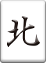
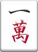
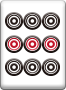
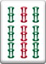
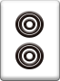
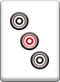
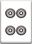
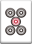
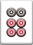
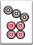
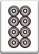
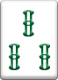
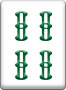
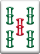
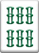
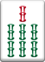
+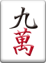
手牌から不要な牌を 3枚 選んでください
続けてもう一度交換を行いますか？